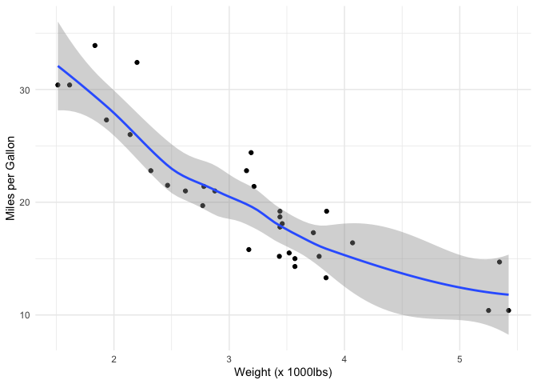

About

You could use this space to talk a bit about yourself, your research group, whoever you need to thank, etc. You could also put a link to the project’s GitHub repo, OSF page, research group website, and guide the reader where to look to learn more about the project and so on.
© Design:
d-asnaghi
and
HTML5 UP
. Adapted by
Daniel Roelfs
Code

This page serves to document the code associated with your paper. I’d
recommend not to copy-paste the code from your scripts verbatim in here,
but instead to use this page to document the organization of the
different scripts.
For instance, here’s an R script that does some stuff:
here’s an R
script
And for good measure, here’s a Python script:
here’s a Python
script
I recommend that you use simple markdown to write this document. It is
the simplest and most consistent way. Add your scripts to the
files/scripts/ folder in the website root directory. Link the scripts
with the code above and add a description to inform the reader about the
purpose of each script. Obviously, it’s still important to have
well-commented code within your scripts, but this script serves to guide
the reader through the pipeline, and to document how the scripts link
together.
Because I know this functionality will be appreciated by some, I also
added the possibility to knit Rmarkdown documents to markdown (see the
code.Rmd file in the content/ directory). You can go into any text
editor you use to edit the other .md files. Example will follow later.
Now let’s see what we can do when we knit in Rmarkdown. Here’s some code
loading a package:
library(tidyverse)
## ── Attaching packages ─────────────────────────────────────── tidyverse 1.3.0 ──
## ✔ ggplot2 3.3.2 ✔ purrr 0.3.4
## ✔ tibble 3.0.4 ✔ dplyr 1.0.2
## ✔ tidyr 1.1.2 ✔ stringr 1.4.0
## ✔ readr 1.4.0 ✔ forcats 0.5.0
## ── Conflicts ────────────────────────────────────────── tidyverse_conflicts() ──
## ✖ dplyr::filter() masks stats::filter()
## ✖ dplyr::lag() masks stats::lag()
And here’s a random plot:
ggplot(mtcars, aes(x = wt, y = mpg)) +
geom_point() +
geom_smooth() +
labs(x = "Weight (x 1000lbs)",
y = "Miles per Gallon") +
theme_minimal()
## `geom_smooth()` using method = 'loess' and formula 'y ~ x'

The .md file will show something like
this:

Here also counts:
“I didn’t have time to write a short letter, so I wrote a long one
instead.”
- Mark Twain
Or: anything is better than nothing
Data

Here is where we can store the data from the publication. Ideally, you’d link all files necessary to rerun the analyses using the scripts from the
code
section of this website. Be aware that the file limit for GitHub respositories is 100MB, so if you want to upload files larger than that (e.g. GWAS summary statistics) you’d need to link it to somewhere else, for instance
Open Science Framework
(file size limit of 50GB) or
Academic Torrents
(no limit). If you want to keep all your files together in the source directory of this site anyway, you can add the files larger than 100MB to the .gitignore file to tell Git to not push these files to your repository.
Here’s an example of how to link to files in this page:
For instance:
here’s a csv file
And
here’s a plain text file
This link is generated like this:
[here's a csv file](/data/mtcars.csv)
Here’s how you can link to for instance a file on OSF:
[Here's a file on OSF](https://osf.io/6tewj/)
Which will look like this:
Here’s a file on OSF
Internal links to for instance the
code
section are generated as follows:
[code](#code) (Note the `#` before the page name)
Populate this page with links and short descriptions of what is linked and a short meaning of the variables. Concise, readable, descriptions are better than really long and complex descriptions, but anything is better than nothing!
Paper and Preprint

The home page has direct links to the paper and the preprint, so this page exists just to offer the same link after you’ve left the landing page.
I’d recommend to make sections for the different versions of the manuscript online. Obviously, there are the final paper and the preprint, but perhaps you’ve also pre-registered your study, in which case you could link it here too to collect all versions and stages of the manuscript in one page. If appropriate, you could also add reviewer’s comments to the different stages to collect a full history of the submission/revision cycle!
Links work like they do for any other page. Normal Markdown syntax applies in the format:
[<label>](<url to the paper/preprint/etc.>)
You can use reverse chronological ordering to create a make-do timeline of the manuscript from preregistration to final publication. You could also add possible publications from the press office, media mentions or Twitter threads or whatever to document all the public communications about the project in one page.
Paper
The final paper was published in
NeuroImage
on the 1st of September 2020. We wrote a new
Twitter thread
when the final paper was published.
Press Release
The Press Office of the university released an item about this project on the 1st of February 2020, click
here
to read it.
Preprint
The preprint of the manuscript was published on
bioRxiv
on the 1st of January 2020. We also wrote a
Twitter thread
when the preprint came online.
Pre-registration
We submitted the preregistration for this project to
OSF
on the 1st of September 2019.
And so on…
Anything is better than nothing.
Summary

Popular scientific summaries are very important, and not often appreciated enough. Personally, I’ll always write one because I can’t be bothered to explain to my parents, grandparents, or friends not in science what the hell I’ve been doing for the past few months. Summarizing your project quickly and in a manner that is understandable for every lay person is worth the effort, believe me!
Here, you can use figures, tables, etc., to explain to Joe and Jane Carpenter what you did, what you found, and why they should care.
Don’t make it too long, don’t make it too short. Figures are always appreciated, illustrations even more! Also, don’t be too technical, don’t fuzz in details, mention only the main take-aways, and write with your grandmother in mind! Here’s some links to help you get started with writing a popular scientific summary with more tips: